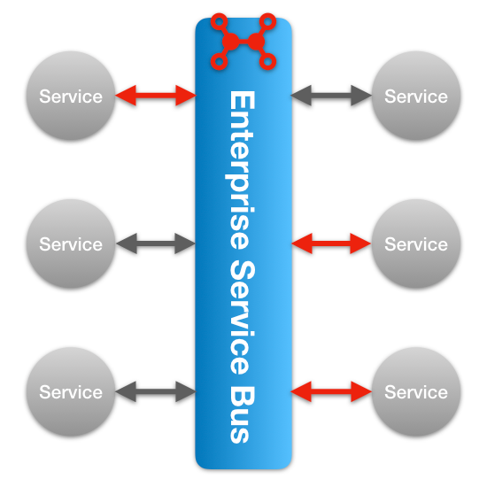
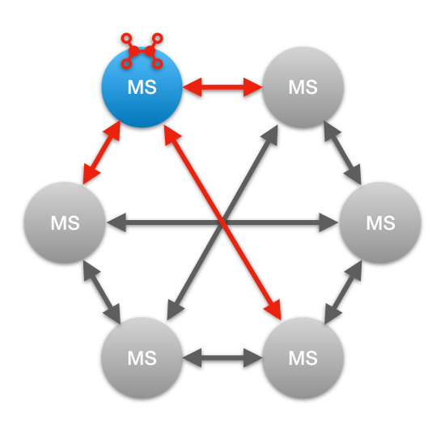
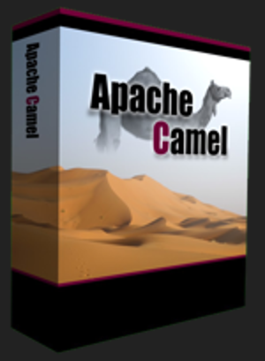
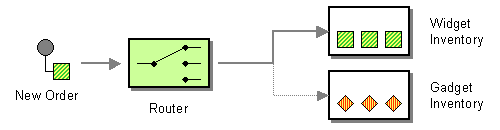
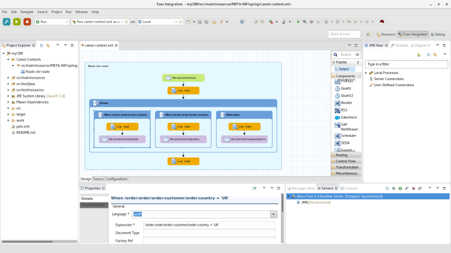
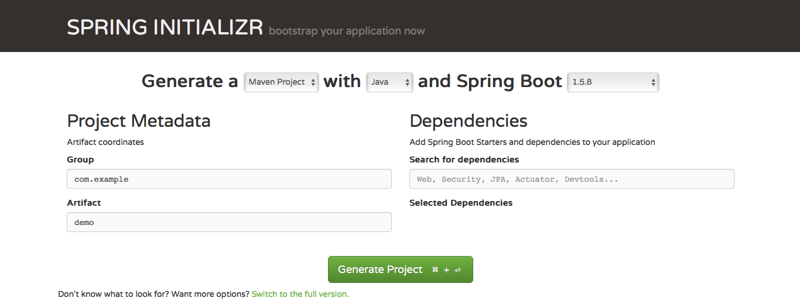
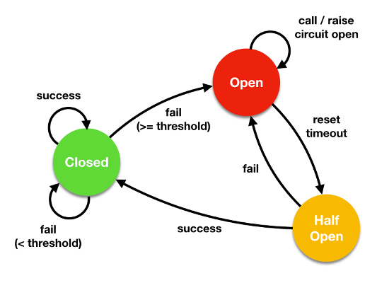
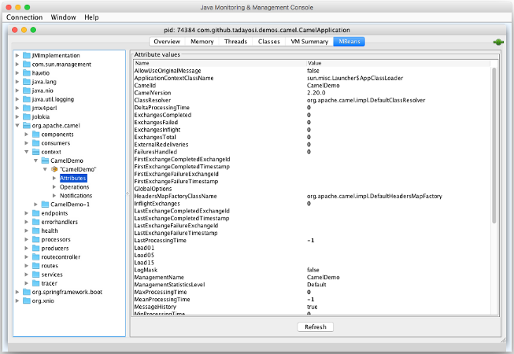
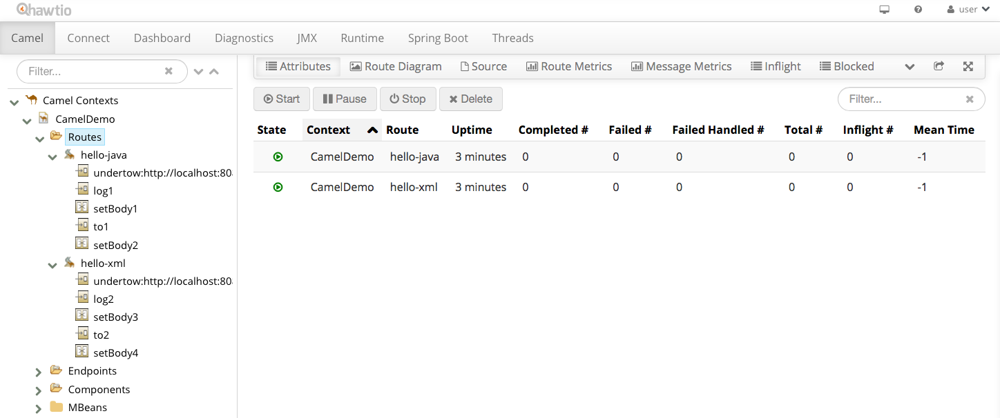
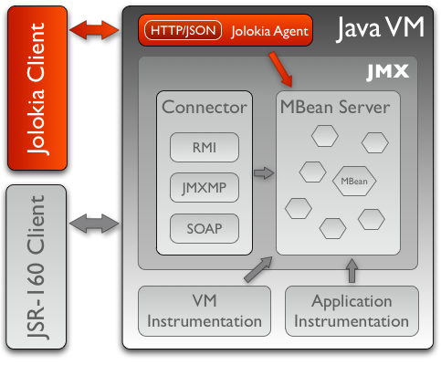

Apache Camel + hawtio + Spring Boot による
モダンなインテグレーション
マイクロサービス
#ccc_c2
2017.11.18
|
Twitter: @tadayosi GitHub: tadayosi |
佐藤 匡剛 シニアソフトウェアエンジニア
|
Agenda
- インテグレーションマイクロサービス
- Apache Camel とは
- インテグレーションマイクロサービスの作り方
- hawtio によるモニタリング
Agenda
- インテグレーションマイクロサービス
- Apache Camel とは
- インテグレーションマイクロサービスの作り方
- hawtio によるモニタリング
インテグレーション
マイクロサービス
マイクロサービスの特徴
- サイズが小さい
- モニタリング可能
- 障害を前提にした設計
- 高いカスタマイズ性
- 賢いエンドポイントと単純なパイプ
- テスト容易性
賢いエンドポイントと単純なパイプ
Smart endpoints and dumb pipes
“The microservice community favours an alternative approach: smart endpoints and dumb pipes. Applications built from microservices aim to be as decoupled and as cohesive as possible – they own their own domain logic and act more as filters in the classical Unix sense – receiving a request, applying logic as appropriate and producing a response. These are choreographed using simple RESTish protocols rather than complex protocols such as WS-Choreography or BPEL or orchestration by a central tool.”
– James Lewis & Martin Fowler
ルーティングロジックがエンドポイントに
|  SOA | vs. |
 マイクロサービス |
Agenda
- インテグレーションマイクロサービス
- Apache Camel とは
- インテグレーションマイクロサービスの作り方
- hawtio によるモニタリング
Apache Camel
|  |
|
Apache Camel
|
🐪 Camel でできること 🐪
- HTTP/REST で受け取ったリクエストを Twitter にツィートする
- SOAP で受け取ったリクエストを Kafka へ流す
- ActiveMQ から受け取った JMS メッセージを、データの内容に応じて：
- MongoDB に永続化する
- 別の Web サービス に投げる
- Twilio を使ってスマホに SMS で通知する
Java DSL
HTTP で受け取ったリクエストを Twitter にツィートする
public class HelloRoute extends RouteBuilder {
@Override
public void configure() throws Exception {
from("undertow:http://localhost:8080/hello")
.log("name = ${in.header.name}")
.setBody(simple("Hello, ${in.header.name}! #ccc_c2"))
.to("twitter-timeline://user")
.setBody(constant("Success!"));
}
}Alt Java でも OK
(Scala)
class HelloRoute extends RouteBuilder {
override def configure: Unit = {
from("undertow:http://localhost:8080/hello")
.log("name = ${in.header.name}")
.setBody(simple("Hello, ${in.header.name}! #ccc_c2"))
.to("twitter-timeline://user")
.setBody(constant("Success!"))
}
}Spring XML DSL
<beans> ... </beans> の中に定義する
<camelContext xmlns="http://camel.apache.org/schema/spring">
<route>
<from uri="undertow:http://localhost:8081/hello" />
<log message="name = ${in.header.name}" />
<setBody>
<simple>Hello, ${in.header.name}! #ccc_c2</simple>
</setBody>
<to uri="twitter-timeline://user" />
<setBody>
<constant>Success!</constant>
</setBody>
</route>
</camelContext>|
Enterprise Integration Patterns
|

Content-Based Router

from("direct:input")
.choice()
.when(header("country").isEqualTo("JP"))
.to("direct:japan")
.when(header("country").isEqualTo("US"))
.to("direct:us")
.when(header("country").isEqualTo("UK"))
.to("direct:uk")
.otherwise()
.to("direct:other");例外処理
例： 1,000 ミリ秒の間隔で、3 回まで再送を試みる
errorHandler(defaultErrorHandler()
.maximumRedeliveries(3)
.redeliveryDelay(1000)
.retryAttemptedLogLevel(LoggingLevel.WARN));
from("undertow:http://localhost:8080/hello")
...280+ のコンポーネント
https://github.com/apache/camel/blob/camel-2.20.0/components/readme.adoc
| AWS | Azure | Box | Cassandra | Consul | |
| CouchDB | CXF | DigitalOcean | Docker | Dropbox | |
| Ehcache | Elasticsearch | Etcd | Ganglia | ||
| GitHub | Hazelcast | Hadoop | Hipchat | ||
| Ignite | Infinispan | IronMQ | jBPM | jclouds | |
| JIRA | JT400 | Kafka | Kubernetes | ||
| Lucene | MongoDB | MQTT | Nagios | OpenStack | |
| OptaPlanner | PubNub | RabbitMQ | Salesforce | SAP | |
| ServiceNow | Splunk | STOMP | Telegram | Thrift | |
| Tika | Twilio | Vert.x | Yammer | ||
| Zendesk | ZooKeeper | … |
Eclipse プラグイン

コンポーネントの開発も簡単
- API Component Framework by Apache Camel
- サービスの API からスタブを自動生成：
- Java SDK
- WADL（REST サービス）
Agenda
- インテグレーションマイクロサービス
- Apache Camel とは
- インテグレーションマイクロサービスの作り方
- hawtio によるモニタリング
インテグレーション
マイクロサービスの作り方
Camel ⚔ Spring Boot
- Spring Boot プロジェクトを作成
- Camel コンポーネント Starter を
pom.xmlに追加 @Componentを付けた Camel ルートを定義
Spring Initializr

Camel の Starter を追加
<dependencies>
...
<dependency>
<groupId>org.apache.camel</groupId>
<artifactId>camel-spring-boot-starter</artifactId>
</dependency>
<dependency>
<groupId>org.apache.camel</groupId>
<artifactId>camel-undertow-starter</artifactId>
</dependency>
<dependency>
<groupId>org.apache.camel</groupId>
<artifactId>camel-twitter-starter</artifactId>
</dependency>Camel ルートを定義
@Component
public class HelloRoute extends RouteBuilder {
@Override
public void configure() throws Exception {
from("undertow:http://localhost:8080/hello")
...Spring XML の場合
@ImportResource で XML を読み込む
@SpringBootApplication
@ImportResource("classpath:camel-context.xml")
public class CamelApplication {
public static void main(String[] args) {
SpringApplication.run(CamelApplication.class, args);
}
}Circuit Breaker パターン

Hystrix in Java
public class HelloCommand extends HystrixCommand<String> {
public HelloCommand() {
super(HystrixCommandGroupKey.Factory.asKey("SampleGroup"));
}
protected String run() throws Exception {
// なにか例外の発生する可能性のある処理をする
return ...;
}
}HelloCommand cmd = new HelloCommand();
String result = cmd.execute();Hystrix in Camel
from("undertow:http://localhost:8080/hello")
.log("name = ${in.header.name}")
.setBody(simple("Hello, ${in.header.name}! #ccc_c2"))
// 自動的に HystrixCommand を生成／実行
.hystrix()
.to("twitter-timeline://user")
.setBody(constant("Success!"))
.onFallback()
.setBody(constant("Error - I'm seeing the whale!"))
.end();使い方
pom.xml に以下を追加
<dependency>
<groupId>org.apache.camel</groupId>
<artifactId>camel-hystrix</artifactId>
</dependency>Demo
Agenda
- インテグレーションマイクロサービス
- Apache Camel とは
- インテグレーションマイクロサービスの作り方
- hawtio によるモニタリング
マイクロサービスを
どうやって監視する？
JVM の監視といえば…
JMX
JConsole …


hawtio
🔥 Web ベースのイケてる JMX 監視ツール 🔥
Made by AngularJS 1.x + Jolokia

Jolokia
🌶🌶🌶 JMX にカプサイシンをぶっ込む 🌶🌶🌶

hawtio ⚔ Spring Boot
pom.xml に dependency を追加するだけ！
<dependencies>
<!-- hawtio -->
<dependency>
<groupId>io.hawt</groupId>
<artifactId>hawtio-springboot</artifactId>
<version>1.5.6</version>
</dependency>
<dependencies>Demo
ラクダ乗りになるには
Camel in Action 2来月（12月）出版予定！ |
Japan Camel User Group
(JCUG)
Camel in Action 2 の読書会を開催中！